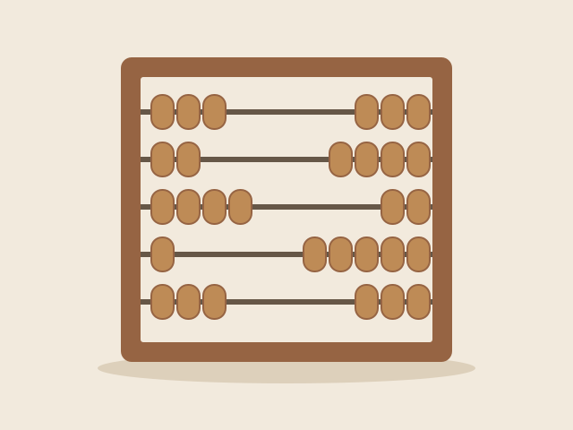

Постоянная экспозиция
До электронных компьютеров
До цифровой эпохи
Вычисления начинаются не с процессора. Счётные инструменты позволяют представить число наглядно и выполнять арифметические действия вручную.
Счёты
Положение костяшек помогает представлять числа и выполнять вычисления без электричества.
Об экспонате →